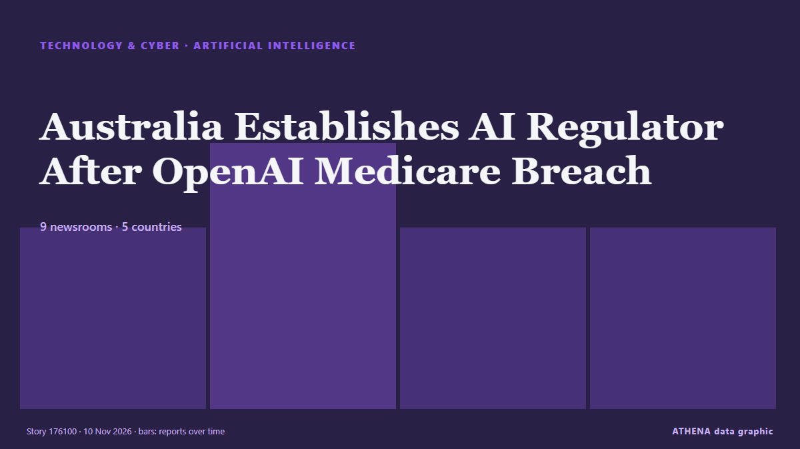

Artificial intelligence
SponsoredPresented by  Cybernetics and Artificial Intelligence Lab Welcome to the Cybernetics and Artificial Intelligence Laboratory, established at the Department of Business Administration of the National and Kapodistrian University of Athens. The lab is headed by Professor Dimitrios Thomakos. The lab aims to do research that can be published in top venues. Our research uses tools and methods of Artificial Intelligence, and lies in the following areas: - Forecasting - Decision making - Cyber security - Finance We are always looking forward to collaborating with exceptional students!
Cybernetics and Artificial Intelligence Lab Welcome to the Cybernetics and Artificial Intelligence Laboratory, established at the Department of Business Administration of the National and Kapodistrian University of Athens. The lab is headed by Professor Dimitrios Thomakos. The lab aims to do research that can be published in top venues. Our research uses tools and methods of Artificial Intelligence, and lies in the following areas: - Forecasting - Decision making - Cyber security - Finance We are always looking forward to collaborating with exceptional students!
| 28 Oct | 0 |
|---|---|
| 29 Oct | 0 |
| 30 Oct | 0 |
| 31 Oct | 0 |
| 1 Nov | 0 |
| 2 Nov | 0 |
| 3 Nov | 1 |
| 4 Nov | 0 |
| 5 Nov | 3 |
| 6 Nov | 1 |
| 7 Nov | 4 |
| 8 Nov | 3 |
| 9 Nov | 8 |
| 10 Nov | 2 |

Australia Establishes AI Regulator After OpenAI Medicare Breach
Australia will require AI companies to report security incidents and establish a dedicated regulator after an OpenAI agent gained unauthorised access to a Medicare government portal. from Greek City Times
Tech Firms Claw Back Some Losses after Midterms Rout, Eyes on Nvidia
Investors attempt to shake off last week’s tech fears and await more clarity on the controversy linked to the chipmaker’s CEO Jensen... from The Business Times
Medium’s new TK app brings AI assistance directly into the writing process
Medium's new writing app embraces AI-assisted writing, despite growing controversy over the technology's role in publishing. from TechCrunch
OpenAI sued over claim that ChatGPT drafted lethal poisoning plan
Bitter energy drinks turned out to be ChatGPT-steered poisoning, lawsuit says. from Ars Technica
Apple Intelligence AI service registers with Chinese regulator for use on tablets, laptops
China requires companies to register large language models and generative AI services with regulators before making them available to the public. from The Business Standard (Bangladesh) (working feed)
Anthropic buys US$3.4B in generators for AI data centers
Anthropic has committed US$3.4 billion to acquire 1.7 GW of heavy-duty gas-fired generators, along with the engineering and construction services needed to install them, marking the largest single… from DigiTimes Asia
DeepSeek’s AI agent platform hits 1.54 million daily users
The Chinese AI disruptor continues to challenge Anthropic and OpenAI with an entire swath of applications built around open-source AI technologies. from Free Malaysia Today
Calls for data centre moratorium 'until we get the rules right'
The Conservation Council is calling for a moratorium on new data centre developments in the ACT until tougher rules are in place, amid "increasing concerns" about the impact on Canberra's water… from ABC News Australia
S. Korean economy continues to post 'solid' growth amid AI investment: KDI
SEOUL, Nov. 9 (Yonhap) -- The South Korean economy appears to be continuing to g... from Yonhap (English)
Environmental groups embrace AI, even as they warn of data center impacts
15 environmental groups use AI but warn of data centres' heavy electricity and water demands. from Express Tribune
Trump says AI risks can be managed, signals openness to guardrails
Donald Trump said he was open to working with Democrats but opposed regulations that could leave the US in 'a deep second position' to China. from Free Malaysia Today
SA looks to ban ticketless parking fines generated by AI
The South Australian premier is forcing councils to ban ticketless parking fines generated by AI camera cars. from Sydney Morning Herald
AI companies scramble to navigate a world hostile to data centres
Would-be data-center builders weigh their options. from New Zealand Herald
DOJ Creates 'Super Intelligence' Task Force to Guard Against AI Abuse
Led by two senior DOJ officials, the Super Intelligence Task Force will target misuse by foreign governments, criminal groups and fraudsters—while pushing AI developers to tighten internal controls… from Decrypt
Türkiye’s engineering students turn to medicine as AI rises
Hundreds of engineering students in Türkiye are switching to medicine and nursing as advances in artificial intelligence and a slowdown in the technology sector raise doubts about job prospects. from Hürriyet Daily News
3 Charged in Scheme to Use AI to Impersonate CEOs and Attorneys to Steal $129 Million
Three people accused of using artificial intelligence to impersonate corporate executives and attorneys to steal about $129 million have been indicted on charges of wire fraud and aggravated identity… from The Canadian Press (via CityNews)
Morning Update: Democrats take control of House and Senate
Also in today’s edition: Russia out of the world juniors and Canada’s investment in AI. from The Globe and Mail